<style>
    /* 基础样式：沉浸式阅读体验 */
    body { 
        font-family: "PingFang SC", "Microsoft YaHei", -apple-system, BlinkMacSystemFont, "Segoe UI", Roboto, "Helvetica Neue", Arial, sans-serif; 
        line-height: 1.8; 
        color: #333;
        max-width: 800px; 
        margin: 0 auto; 
        padding: 40px 20px; 
        background-color: #fff;
    }

    /* 章节单元 */
    .chapter-unit { margin-bottom: 60px; }

    /* 标题体系 */
    h1 { font-size: 2.5em; color: #c0392b; border-bottom: 3px solid #c0392b; padding-bottom: 15px; margin-top: 0; margin-bottom: 10px; }
    .chapter-subtitle { font-size: 1.5em; color: #d35400; margin-bottom: 40px; font-weight: 300; display: block; }
    
    h2 { font-size: 1.8em; color: #2c3e50; margin-top: 50px; border-left: 5px solid #e74c3c; padding-left: 15px; }
    h3 { font-size: 1.4em; color: #34495e; margin-top: 35px; font-weight: 600; }
    h4 { font-size: 1.1em; color: #7f8c8d; margin-top: 25px; text-transform: uppercase; letter-spacing: 1px; font-weight: bold; }

    /* 正文 */
    p { margin-bottom: 1.5em; text-align: justify; font-size: 1.05em; }
    strong { color: #2c3e50; font-weight: 700; }

    /* 特殊区域 */
    .sidebar { background: #fdf2e9; padding: 25px; border-left: 5px solid #d35400; margin: 30px 0; border-radius: 4px; }
    .sidebar h3 { color: #d35400; margin-top: 0; }
    
    .learning-objectives { background: #e8f6f3; padding: 25px; border: 1px solid #a2d9ce; border-radius: 8px; margin: 40px 0; }
    .learning-objectives h3 { color: #16a085; margin-top: 0; }
    .learning-objectives ul { list-style-type: none; padding-left: 0; }
    .learning-objectives li { position: relative; padding-left: 25px; margin-bottom: 10px; }
    .learning-objectives li::before { content: "🎯"; position: absolute; left: 0; top: 0; }

    .concept-check { background: #fffde7; padding: 20px; border-left: 5px solid #f1c40f; margin: 30px 0; }
    .concept-check h4 { color: #f39c12; margin-top: 0; display: flex; align-items: center; }
    
    .feature-box { background: #2c3e50; color: #ecf0f1; padding: 30px; margin: 40px 0; border-radius: 8px; }
    .feature-box h2, .feature-box h3, .feature-box p { color: #ecf0f1; }
    .feature-box a { color: #3498db; }

    .exercises { background: #f9f9f9; padding: 30px; margin: 50px 0; border-top: 2px solid #ddd; }
    .question-list { padding-left: 25px; }
    .question-list li { margin-bottom: 15px; }

    /* 图片占位符 */
    .image-placeholder { 
        background: #f8f9fa; border: 1px solid #dee2e6; 
        display: flex; align-items: center; justify-content: center;
        margin: 25px auto 10px auto; 
        color: #6c757d; font-family: monospace; font-size: 0.9em;
        position: relative;
        overflow: hidden;
    }
    .image-placeholder::before { content: "🖼️ Image " attr(id); position: absolute; top: 50%; left: 50%; transform: translate(-50%, -50%); z-index: 1; }
    .caption { font-size: 0.9em; color: #666; text-align: center; margin-bottom: 35px; font-style: italic; line-height: 1.4; padding: 0 20px;}
    .caption strong { color: #c0392b; font-style: normal; }

    /* 链接与引用 */
    sup { font-size: 0.75em; }
</style>
<article class="chapter-unit">

<div class="caption" style="text-align: left; border-left: 4px solid #e74c3c; padding-left: 15px; margin-top: 20px;">
<strong>左图：</strong>有些星系明亮、灿烂，像这张图中的两个大的星系；而另一些则朦胧而遥远，像出现在背景中的几个小的。这对星系，距离我们近3亿光年，被称为Arp273，正在经历超过百万年的碰撞过程。注意上方星系的玫瑰状外形，是由底部星系的引力造成的。年轻的蓝色恒星形成细长的排列，像宝石一样闪闪发光。并合和吞噬在星系中是常见的，但天文学家仍没有完全了解星系在很久以前是如何形成的。[空间望远镜科学研究所 (STScI)]
    </div>
<h1>第3章 星系和暗物质</h1>
<span class="chapter-subtitle">宇宙的大尺度结构</span>
<p>在比最大的星系团还要大得多的尺度上，宇宙自身的动力学变得显着，新的结构层次显示了出来，震撼人心的新事实出现了。我们可能是恒星的原料，是恒星演化的无数循环的产物，但我们不是宇宙的原料。大宇宙是由从根本上不同于我们熟悉的原子和分子——它们组成了我们的身体、我们的行星、我们的恒星和星系，以及我们在天空中观测到的所有发光物质——的别的物质构成的。</p>
<p>通过比较和分类不同距离的星系的性质，天文学家已经开始认识到它们的形成、动力学和演化。通过绘制出这些星系在空间中的分布，我们可以描绘出宇宙的宏大图景。光点在未知的黑暗中提醒我们，我们在宇宙中的地位并不比一条漂泊在海上的船更特别。</p>
<!-- 学习目标 Sidear -->
<section class="learning-objectives">
<h3>学习目标</h3>
<p>本章的学习将使你能够：</p>
<ul>
<li>描述用来确定星系和星系团质量的一些方法。</li>
<li>解释为什么天文学家们认为宇宙的大多数物质是黑暗的。</li>
<li>描述星系的形成和演化，并概述碰撞在此过程中所起的作用。</li>
<li>展示大质量黑洞存在于星系中心的证据，并解释活动星系如何融入星系演化的现有理论。</li>
<li>总结我们对星系在宇宙中的大尺度分布都知道些什么。</li>
<li>概述天文学家用于在非常大的尺度上探测宇宙的一些技术。</li>
</ul>
</section>
<!-- 知识全景 Sidebar -->
<aside class="sidebar">
<h3>知识全景</h3>
<p>星系包含在宇宙中最大、最美丽的天体中——每个星系都是巨大的被引力松散地结合在一起的数千亿颗恒星的集合。星系主宰着我们对深空的观点——它们似乎无处不在，但它们所代表的所有物质在宇宙中只是很小一部分。数量庞大的、看不见的宇宙物质——<strong>暗物质</strong>，居然占据了宇宙的大多数质量。</p>
</aside>
<div style="background: #f0f0f0; padding: 15px; border-radius: 5px; margin-bottom: 30px; font-size: 0.9em;">
<strong>精通天文学</strong><br/>
        访问 Mastering Astronomy 网站的学习板块，获取小测验、动画、视频、互动图，以及自学教程。
    </div>
<h2>3.1 宇宙中的暗物质</h2>
<p>在第1章中我们看到了，对我们自己的银河系中恒星和气体的旋转速度的测量，是如何揭示出一个包围着我们所见的整个星系的广阔<strong>暗物质晕</strong>的存在。(1.6节) 其他星系也有类似的暗晕吗？我们有什么证据证明在大尺度上有暗物质？为了回答这些问题，我们需要一种方法来计算星系和星系团的质量，然后将这些质量和我们实际观测到的发光物质进行比较。</p>
<p>我们如何测量这么大的星系的质量？当然，我们既不能数出它们的所有恒星，也无法很好地估计它们的恒星际物质：星系都太过复杂，我们无法把它们包含的物质直接编目。相反，我们必须依靠间接的技术。尽管有着巨大的尺度，但星系和星系团遵循的物理定律与控制着太阳系行星的定律相同。为了计算星系的质量，我们像往常一样应用牛顿的引力定律即可。</p>
<h3>星系和星系团的质量</h3>
<p>天文学家可以通过确定旋涡星系的<strong>自转曲线</strong>——画出了自转速度与到星系中心的距离的关系，如图3.1所示——来计算它们的质量。几个邻近星系的自转曲线显示在图3.1(b)中。任何给定半径范围内的质量都直接遵循牛顿定律。显示出来的自转曲线意味着在距星系中心 25kpc 的尺度内，其质量范围从约 $10^9$ 至 $5 \times 10^{11}$ 倍太阳质量——你可以比较对银河系用同样的技术测得的质量。(1.6节)</p>

<div class="caption">
<strong>互动图3.1 星系自转曲线</strong><br/>
        (a) 自转速度可以在距盘状星系中心不同的距离处进行测量，如这里描绘的M64黑眼星系，距我们大约5Mpc。(b) 一些邻近的旋涡星系的自转曲线表明，其质量是太阳质量的数千亿倍。[美国国家航空航天局 (NASA)]
    </div>
<p>遥远的星系一般都因太远而无法获得这样精细的曲线。然而，通过观测它们的谱线致宽——正如我们在第2章中塔利-费舍尔关系的上下文中曾经讨论过的——我们仍然可以测量这些星系的整体自转速度。(2.2节) 估计出一个星系的大小，就可以估计出其质量。类似的技术已被应用到椭圆星系和不规则星系。一般情况下，该方法对测量距星系中心 50kpc 范围内——从恒星和恒星际物质发出的电磁辐射的区域——的质量非常有用。</p>
<p>要探测距离星系中心更远的地方，天文学家们会利用双星系系统 [见图3.2(a)] ——两个成员星系可能相距数十万秒差距。这样一个系统互相绕转的轨道周期通常是几十亿年，时间太长以至于无法对轨道进行精确测量。然而，通过从可见的信息——视向速度和两个星系间的角距——估计周期和半长轴，可以得出一个近似的总质量。</p>

<div class="caption">
<strong>图3.2 星系质量</strong><br/>
        (a) 在一个双星系系统中，星系质量可以通过观测一个星系相对于另一个星系的轨道来估计。(b) 星系团的质量可以通过观测团中许多星系的运动，然后估计为了防止星系团飞散需要有多少质量来获得。
    </div>
<p>简单的问题来估算星系团的质量：要想通过引力束缚住这些星系，星系团必须至少要有多少质量？例如，如果我们发现一个星系团中的星系正以 1000km/s 的平均速度运动，星系团的半径为 3 Mpc（均为典型值），根据牛顿定律可知：假设星系团是引力束缚系统，星系团的质量必然大约为 $(3 \text{ Mpc}) \times (1000\text{km/s})^2 / G \approx 7 \times 10^{14}$ 太阳质量。用这种方式获得的星系团质量一般介于 $10^{14} \sim 10^{15}$ 太阳质量之间。请注意，此计算没有给我们关于任何单独星系的质量信息，它告诉我们的仅仅是星系团的总质量。</p>
<h3>可见物质和暗晕</h3>
<p>如图3.1所示的旋涡星系的自转曲线保持平坦（即不衰减，甚至小幅上扬），远远超出了星系的可见光图像，这意味着这些星系——也许所有的旋涡星系——含有大量的暗物质，以不可见的<strong>暗晕</strong>形式——类似于围绕银河系的晕——存在。(1.6节) 整体而言，旋涡星系的总质量似乎是可见的发光物质的总质量的3到10倍。对椭圆星系的研究也表明有类似的巨大暗晕围绕这些星系。</p>
<p>当天文学家们研究星系团时，他们发现，可见物质和总质量之间有更大的差异。星系团的总质量，是所有成员星系发光物质加在一起的质量的10到将近100倍。换句话说，要想束缚住星系团，需要比可见物质多得多的质量。因此，暗物质不只是在我们自己的银河系存在，在其他星系也存在，并以更大的程度在星系团中存在。在这种情况下，我们不得不接受一个事实，即宇宙中高达90%的物质是黑暗的。并且，这些物质在电磁波的所有波长上都不能被探测到，而不仅仅是在可见光部分。</p>
<p>正如在第1章讨论的，许多对暗物质可能的解释已经被提出，从不同种类的恒星残余到奇异的亚原子粒子。(1.6节) 无论其性质如何，星系团中的暗物质绝不只是简单地将每个星系中的暗物质累积在一起。即使包括了星系的暗晕，我们仍然不能说明星系团中所有的暗物质。当我们的目光看向越来越大的尺度时，我们发现，宇宙中物质越来越多的部分是黑暗的。</p>
<h3>星系团内气体</h3>
<p>除了观测到的星系团内星系的发光物质，天文学家也有证据表明存在大量<strong>星系团内气体</strong>——超级热（超过1000万开尔文）且弥漫的星系际物质填满了星系之间的空间。地球大气层外的卫星已发现了来自许多星系团的大量X射线辐射。图3.3为一个这样的系统的伪彩色X射线图像。X射线发射区域以星系团的可见光图像为中心，并且在大小上可与后者相比。</p>

<div class="caption">
<strong>图3.3 星系团的X射线辐射</strong><br/>
        (a) 遥远星系团Abell 1835的红外和X射线图像叠加在一起。红外（红色）图像体现了星系，但X射线显示了模糊的、浅蓝色的热气体，充满了星系际空间。(b) 中央区域的一张较长曝光时间的红外照片，显示了这个星系团的密集，跨越了100万pc。[美国国家航空航天局 (NASA)、欧洲航天局 (ESA)]
    </div>
<p>星系团内气体的进一步证据可以在一些活动星系的射电瓣的外观中被找到。(2.4节) 在一些被称为<strong>头-尾射电星系</strong>的星系中，射电瓣似乎形成了一个“尾巴”，拖在星系的主要部分的后面。例如，射电星系NGC 1265的射电瓣，如图3.4所示，看起来似乎正被一些汹涌的风“向后吹”。并且，事实上，这也是对该星系外观的最可能的解释。如果NGC 1265是不动的，这将是又一个双瓣射电源，或许与半人马座A（见图2.22）颇为相似。然而，该星系正穿过其母星系团（被称为英仙星系团）的星系际介质，形成射电瓣的外流物质趋于留在NGC 1265移动方向的后方。</p>
<p>这些观测揭示了多少气体？至少，在星系团内以热气体的形式存在的质量与以可见的恒星形式存在的质量是一样多的——在大多数情况下，前者比后者显著更多。这些气体确实很多，但仍然没有解决暗物质问题。要想解决对星系团的动力学研究暗示的总质量，我们就必须找到比恒星多10~100倍质量的气体。</p>
<p>为什么星系团内气体这么热？很简单，因为它的颗粒受引力束缚，因此移动速度可以与星系团中的星系相比——1000km/s左右。而温度正好是气体粒子移动速度的度量，这个速度转换（对于质子）成温度为4000万开尔文。</p>
<p>这些气体从何而来？它们太多了，不可能被星系本身释放出来的。相反，天文学家认为，它们主要是原始气体，随宇宙形成而产生，且从来没有成为星系的一部分。然而，星系团内气体确实含有一些重元素——碳、氮等——这意味着至少有一些物质是在恒星演化后从星系中抛出的。只是这种情况是如何发生的仍然是个谜。</p>

<div class="caption">
<strong>图3.4 头-尾射电星系</strong><br/>
        (a) 头-尾射电星系NGC 1265的射电波段伪彩色照片。(b) 相同的射电数据，以轮廓的形式，叠加在星系的光学图像上。天文学家推测，该天体在空间中迅速移动，在其移动的反方向拖着一条“尾巴”。[美国国家射电天文台 (NRAO)、帕洛玛天文台 (Palomar Observatory)、加州理工学院 (Caltech)]
    </div>
<div class="concept-check">
<h4>科学过程理解检查</h4>
<p><strong>✓ 当我们利用对一个星系团的成员星系的光谱观测推测这个星系团的质量时，我们做了什么假设？</strong></p>
</div>
<h2>3.2 星系碰撞</h2>
<p>考虑到富星系团（如室女或后发星系团）的拥挤程度——成千上万的成员星系在数百万秒差距的空间中互相绕转，我们可以认为，星系之间的碰撞是常见的。(2.2节) 如同气体粒子与我们的大气层碰撞，曲棍球运动员在赛场上碰撞，那么，星系团中的星系也会碰撞吗？答案是肯定的，而这个简单的事实对我们了解星系是如何演化的起了关键作用。</p>
<p>图3.5的左侧明确显示了一个小星系（也许是右边的两个星系中的一个，尽管这不能肯定）与一个位于左边的更大的星系进行“公牛眼”碰撞的结果——“车轮”星系，距地球约150Mpc，其年轻恒星的晕类似池塘里的一个巨大涟漪。该涟漪最有可能由较小星系穿过较大星系的星系盘面形成的密度波造成。(1.5节) 这一扰动现在正从撞击区域向外扩展，随着它的经过而形成新的恒星。</p>
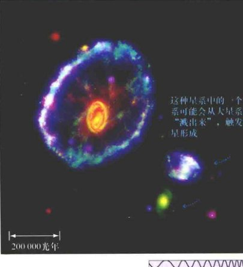
<div class="caption">
<strong>图3.5 宇宙的车轮</strong><br/>
        “车轮”星系（左）可能是（与右边的一个较小的星系）碰撞的结果，产生了扩张着的正在进行恒星形成的环，通过星系盘而向外移动。这是一张伪彩色合成图像，叠加了4个光谱波段：红色代表红外（来自斯必泽望远镜），绿色代表可见光（来自哈勃望远镜），蓝色代表紫外（来自GALEX探测器），紫色代表X射线（来自钱德拉望远镜）。[美国国家航空航天局 (NASA)]
    </div>
<p>图3.6显示了（还）没有导致实际碰撞的一个近距离交会的例子。两个旋涡星系显然正在通过对方，就像在夜间互相通过的两艘巨轮。左边个头和质量更大的星系叫作NGC 2207，右边较小的那个是IC 2163。对这一照片的分析表明，IC 2163现在正以逆时针方向旋转着通过NGC 2207，并已经在大约4000万年前经历了近距离交会。这两个星系似乎注定要经历进一步的近距离交会，因为IC 2163显然没有足够的能量去逃离NGC 2207的引力。两个星系每次近距离交会时，恒星形成的爆发在两个星系中到处出现，因为星际气体和尘埃云被猛推和震动。在大约十亿年的时间里，这两个星系可能会并合成一个单一的、更大的星系。</p>

<div class="caption">
<strong>图3.6 星系交会</strong><br/>
        两个旋涡星系NGC 2207（左）和IC 2163之间的这次交会，已经在两个星系中造成了恒星形成的风暴。它们最终将在大约10亿年左右的时间里并合。[美国国家航空航天局 (NASA)]
    </div>
<p>这些例子说明了一个星系与另一个星系的相互作用——一次近距离交会或者一次实际的碰撞——会产生多么戏剧性的结果，尤其是对它的星际气体。在交会过程中快速变化的引力压缩气体，常常导致整个星系范围的恒星形成的出现，其结果是形成一个<strong>星爆星系</strong>，图3.7显示了星爆星系的一个壮观的例子。</p>
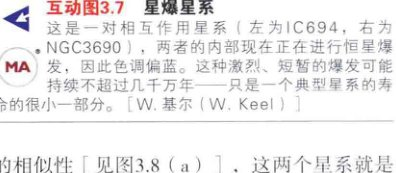
<div class="caption">
<strong>互动图3.7 星爆星系</strong><br/>
        这是一对相互作用星系（左为IC694，右为NGC3690），两者的内部现在正在进行恒星爆发，因此色调偏蓝。这种激烈、短暂的爆发可能持续不超过几千万年——只是一个典型星系的寿命的很小一部分。[W. 基尔 (W. Keel)]
    </div>
<p>没有人能见证星系碰撞的全过程，因为它会持续数百万年。然而，计算机可以在几个小时内模拟这一事件。参考恒星和气体之间的引力相互作用的详细模型，并结合气体动力学的最佳可用模型，使天文学家能更好地理解所涉及的星系碰撞的影响，甚至估计星系相互作用的最终结果。</p>
<p>图3.8(b)所示的碰撞开始于两个正在碰撞的旋涡星系，与图3.6所示的差别不是太大，但原始结构的细节已经在很大程度上被碰撞抹掉了。请注意与NGC 4038/4039真实照片的相似性 [见图3.8(a)]，这两个星系就是所谓的“触须星系”，显示出了延长的尾巴，以及只相距数百秒差距的双星系中心。碰撞引起的恒星形成靠数以千计的年轻炽热的恒星发出的蓝光而被清楚地追踪。模拟表明，正如图3.6所示的星系的情况，最终这两个星系将并合成一个。</p>
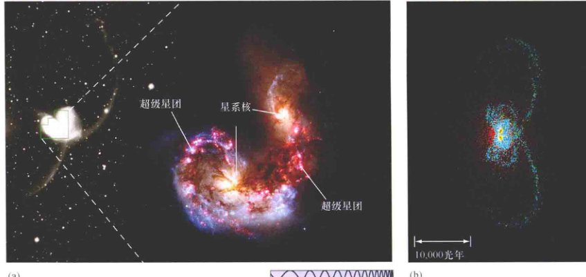
<div class="caption">
<strong>图3.8 星系碰撞</strong><br/>
        (a) 长长的潮汐“尾巴”（左侧的黑白图）显示了“触须星系”几千万年前的最终“俯冲”。年轻、明亮的“超级星团”（中央放大的彩色图像）带是由两个碰撞星系的气体盘产生的剧烈冲击波造成的。(b) 一个计算机模拟的碰撞，显示了许多与左边真正的天体相同的结构。[美国大学天文联盟 (AURA)、美国国家航空航天局 (NASA)、J. 巴恩斯 (J. Barnes)]
    </div>
<p>星系团中的星系似乎经常发生碰撞。许多类似之前的图片所显示的碰撞和近距离交会已经被观测到（参见2.4节）。一个简单的计算表明，哪怕是在一个拥挤程度适中的星系团中，只要给定拥挤程度，近距离交会就将是常态，而不是意外。原因很简单：星系团中相邻星系之间的平均距离为几十万秒差距，这个距离比一个典型星系的大小（包括其延展的暗晕）大不了很多（肯定不超过5倍），根本没有那么多空间可以让星系在不撞到对方的情况下到处“漫游”。许多研究者认为，在大多数星系团中的大多数星系已经受到了碰撞的强烈影响，某些例子甚至发生在相对较近的过去。</p>
<p>计算机模拟清楚地表明，围绕着星系——就算不是全部星系，也是大多数星系——的广阔的暗物质晕，是星系碰撞的关键。暗晕使得星系比它们的光学外观大得多，这暗示星系之间相互作用和并合的可能性比较大。考虑两个星系彼此靠近，当它们做轨道运动时，星系彼此的暗晕相互作用，减缓了星系的运动。潮汐力剥去了晕中的物质，暗晕物质在星系之间被重新分配或完全从星系中丢失。无论是哪种情况，都会造成一个更强大的相互作用，可以极大地改变两个星系的轨道。</p>
<p>在较小的星系团中，星系的速度足够低，相互作用的星系倾向于“粘在一起”，然后并合——如同在计算机模拟中，这是最常见的结果。在更大的星系团中，星系移动速度更快，而且往往彼此通过而不“粘连”。无论哪种方式，近距离交会都会对所涉及的星系产生重大影响（见3.3节）。如果我们等待足够长的时间，我们就将有机会亲眼看到星系碰撞是什么样子的：我们最近的大邻居仙女星系（见图1.2），目前正在以120km/s的速度接近银河系。在数十亿年后，它将与银河系发生碰撞，然后我们就可以亲自测试天文学家的理论了！</p>
<p>奇怪的是，虽然碰撞会严重破坏所涉及星系的大尺度结构，但却对它们包含的单个恒星毫无影响。每个星系内的恒星只是彼此擦过。与星系团中的星系相反，星系中的恒星是如此之小，远小于恒星之间的距离，当两个星系发生碰撞时，恒星的数量仅仅在一段时间内增加一倍，但它们仍然有足够大的空间以避免碰到对方。碰撞可以重新排列每个星系的恒星和恒星际物质，往往产生壮观的、可能在遥远的距离上可见的恒星诞生的爆发；但是从恒星的角度来看，它仍旧“一帆风顺”。</p>
<div class="concept-check">
<h4>概念理解检查</h4>
<p><strong>✓ 碰撞在星系演化中起什么样的作用？</strong></p>
</div>
<h2>3.3 星系的形成与演化</h2>
<p>以哈勃定律为宇宙中距离的指导，并以星系和更大尺度的暗物质分布知识作为基础，让我们来关注星系变成今天这个样子是如何一路走来的。我们可以解释我们看到的不同类型的星系吗？天文学家已经知道，哈勃分类方案中的各种类别之间没有简单的演化联系。(2.1节) 为了回答这个问题，我们必须了解星系是如何形成的。</p>
<p>不幸的是，相比于恒星形成和演化的理论，星系形成和演化的理论仍然处于起步阶段。星系比恒星更复杂，它们很难被观测，观测了也很难被理解。此外，我们对星系形成阶段的宇宙条件只有部分信息，完全不同于对应的恒星的情况。最后，也是最重要的，恒星们几乎没有相互碰撞，其结果是大多数单星和双星孤立的演化。但是，星系在它们的一生中可能遭受无数的碰撞，使得更难破译它们的过去。事实上，那些在上一节中描述的碰撞模糊了形成和演化之间的区别，使得不同阶段之间很难区分。</p>
<p>然而，一些一般性的想法已经得到了广泛的认可，并且我们可以对这个形成了我们现在所看到的星系的过程发表一些见解。我们首先描述小星系并合形成较大星系的大体情形，然后讨论内部恒星演化和外部影响是如何随着时间而变化的。最后，我们考虑哈勃分类法中的星系类型如何适应这个广阔的图景。</p>
<h3>并合与吞并</h3>
<p>星系形成的种子播撒在极早期的宇宙——当原始物质中的小密度波动开始增长时（见5.5节）。我们在这里的讨论始于已经形成的“星系前”气体斑点，这些各种各样的碎片质量相当小——只有几百万倍太阳质量，相当于如今最小的矮星系的质量——这些矮星系实际上可能是早期的残余。大多数天文学家认为，星系通过较小天体的并合而增长，如图3.9(a)所示。这一点与恒星形成过程对比，后者是一个大的星云碎成小块，最终成为恒星。</p>
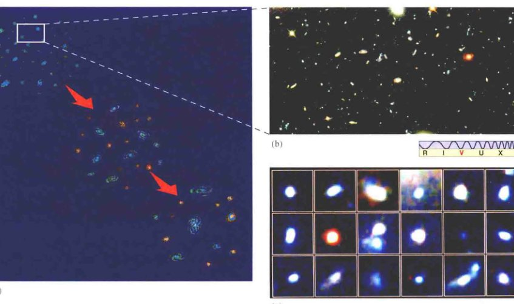
<div class="caption">
<strong>图3.9 星系形成</strong><br/>
        (a) 目前，星系形成的最好理论认为，较大的星系是较小的星系通过碰撞与并合建立的，如左侧的示意图所示。(b) 这张照片是有史以来获取的宇宙最深处的图像，提供了数百个星系碎片的“化石证据”，它们距离我们超过5000Mpc。(c) 这是(b)图选定部分的放大，揭示了丰富（十亿颗恒星量级）的“星团”，集中在空间中一个相对较小的体积内（直径约1Mpc）。这些星系前碎片可能即将并合形成一个星系。图中的事件发生在大约100亿年前。[美国国家航空航天局 (NASA)]
    </div>
<p>这个阶梯式并合图景的理论证据是由计算机对早期宇宙的模拟提供的，清楚地表明了这个过程的发生。进一步的强有力的支持来自于对高红移星系的观测（意味着它们很遥远，我们看到的光是很久以前发出的），发现它们明显比近处的星系小很多且不规则。图3.9(b)（也见图3.10）显示了一些这样的照片，其中所示的天体距离超过50亿pc。模糊的蓝色光斑是独立的小星系，每个都只包含银河系质量的百分之几。其不规则的形状被认为是星系并合的结果，偏蓝的颜色来自于在并合过程中形成的年轻恒星。</p>
<p>图3.9(c)显示了图3.9(b)中的一些天体更详细的视图，它们都处于相同的空间区域，跨度大约1Mpc，距地球近5000Mpc。每个光斑看上去都是一个约1kpc尺度的扭曲的球体，包含数十亿颗恒星。它们明显偏蓝的色调显示，活跃的恒星形成已经展开。我们看到的是它们在近100亿年前的样子，一群年轻的星系可能准备并合成一个或多个更大的天体。</p>
<p>阶梯式并合提供了对星系演化的所有现代化研究的概念性框架。它描述了数十亿年前开始并延续到今天的星系碰撞与并合的过程（虽然此情况在今天已大大减少）。通过研究星系的性质如何随距离——即回溯时间——而变化，天文学家试图拼凑出宇宙的并合历史。（详细说明2-1）</p>
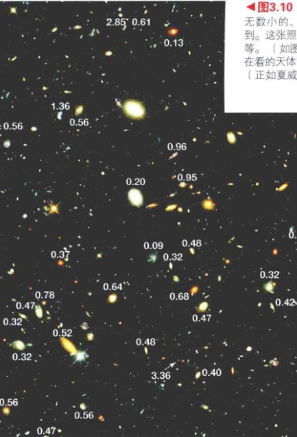
<div class="caption">
<strong>图3.10 哈勃深场</strong><br/>
        无数小的、形状不规则的年轻星系可以在这个非常深的光学图像中看到。这张照片被称为哈勃深场-北，曝光时间约100h，拍摄的天体暗至30等。（如图3.9的情况，在这里，“深”的意思是“暗”，意味着我们正在看的天体离我们很远，我们看到的是它们很久以前的样子。）红移测量（正如夏威夷的凯克天文台观测到的叠加值所指出的那样）表明，这些星系中的一些距离地球远远超过1000Mpc。(详细说明2-1) 这张照片的视场大约是2'，不到满月角直径的十分之一。[美国国家航空航天局 (NASA)、凯克望远镜 (Keck)]
    </div>
<p>图3.10是一幅来自哈勃太空望远镜的非凡图像，显示了天空的一片极微小的区域里星系在几十亿年的演化。大而明亮的、较容易辨别哈勃类型的星系大多是（根据它们的红移）相对较近的天体；而在背景上小而黯淡且不规则的星系，则离我们遥远得多。这些遥远星系的大小和外观与那些前景星系相比，强烈支持了这一基本想法：星系在过去更小、更不规则。</p>
<h3>演化与相互作用</h3>
<p>孑然一身的星系将会缓慢演化、相当稳定，星际气体和尘埃云会变成新一代恒星，主序星演化成巨星，并最终成为致密的残骸——白矮星、中子星和黑洞。星系的整体颜色、成分和外观，随着恒星的周期性演化和星系的星际物质的丰富情况，以多少可预测的方式变化。如果星系是椭圆的，就会缺乏星际气体，随着时间的推移，大质量恒星燃烧殆尽且不被替代，星系会变得暗淡和偏红。对于气体丰富的星系，如旋涡星系或不规则星系，明亮的恒星会导致整体颜色呈蓝色——只要气体可持续保持形成这些亮星。</p>
<p>但是，许多——也许是大多数——星系并不是孤单的，它们“居住”在小星系群和星系团里。而且，正如我们刚才看到的，可能会与其他星系长时间进行反复的相互作用。正如上一节所描述的，这些相互作用可以重新排列一个星系的内部结构，压缩星际气体，并触发突然的、剧烈的恒星形成的爆发。交会也可能转移“燃料”到中央的黑洞，驱动一些星系核中的暴力活动。(2.4节) 因此，恒星爆发和核活动是星系之间相互作用和并合的关键指标。</p>
<p>对星爆星系和活动星系核的仔细研究表明，大多数星系的交会可能发生在很久以前——在红移大于1的地方，那时，星系团更紧密，星系碰撞相应也更加频繁。(详细说明2-1) 我们看到的这些暴力事件中的大多数，是它们在100亿年前刚刚发生时的样子。观测到的本地星系之间的相互作用是同样的基本过程扩展到今天的样子。图3.11给出这些（大部分）古老事件的图形和艺术总结。</p>
<p>虽然阶梯式并合方案很好地说明了在宇宙的整个演化史中星系的数量和总质量（包括暗物质）的原因，但近年来天文学家已经认识到，这不是“故事”的全部。具体来说，这种情况难以解释星系中气体的分布和观测到的一直到今天的恒星形成率 [见图3.11(a)]。许多盘状星系有不对称或变形的气体盘，通常在盘面上方或下方会发现比理论预计更多的气体。此外，观测到的宇宙中的恒星形成率大于我们的预期——如果星系只是简单地消耗它们在很久以前形成时所含有的气体的话。相反，正如银河系的情况，恒星的形成和星系的成长似乎被从星系际空间不断汇入的新鲜气体所增强和延长。(1.4节) 支持这一图景的证据来自对一些“小”的遥远星系的射电观测，类似图3.9所示的那样，它们表明，可见光星系其实是由巨大的、冷的、大多数是氢气的盘所包围。</p>
<p>因此，我们有充分的证据表明，星系在不断演化，它们在第一批星系前碎片形成和并合的很长时间以后，仍然在对外部因素做出反应。</p>

<div class="caption">
<strong>图3.11 星系的构建和恒星形成</strong><br/>
        (a) 这幅图通过对许多到我们不同距离的星系光度的观测所得，意味着恒星形成率的峰值是在大爆炸之后的数十亿年。矮星系内包含的吸积物质有助于成长为更大的星系，正如(b)中艺术图所描绘的。
    </div>
<h3>并合的类型</h3>
<p>不同类型和质量的星系可以导致几乎令人眼花缭乱的各种可能的相互作用。在这里，我们只考虑许多可能性中的少数。</p>
<p>如果一对相互作用星系中的一个碰巧比另一个的质量低得多，那么它与另一个星系的晕的相互作用就导致其向内螺旋，并最终在较大星系的中心附近被打乱。这个过程俗称<strong>星系吞食</strong>，可能可以解释为什么超大质量星系往往在富星系团的核心处被发现。它们“吞食”了自己的同伴，现在位于星系团的中心，并等待着更多“食物”的到来。图3.12是一个了不起的图像组合，显然在一个遥远的星系团中捕捉到了正在起作用的这个过程。</p>

<div class="caption">
<strong>图3.12 星系吞食</strong><br/>
        这是戏剧性的一幕，展示了一个正在通过并合更小更轻的星系而“组装”起来的巨大且大质量的星系。大多数星系大概是在宇宙早期以这种方式发展起来的——总体上是一幅自下而上的图景，真正巨大的天体是由富含恒星的基本成分通过阶梯式并合而形成的。这张照片捕捉了发生在大约100亿年前的一次形成过程，那时只是宇宙大爆炸后几十亿年。白框中的部分以放大图像的形式突出显示在左上角，这个星系的编号是MRC 1138-262，绰号“蜘蛛网星系”。放大图更清晰地显示了几十个即将并合成一个单一巨大天体的小星系。[美国国家航空航天局 (NASA)、欧洲航天局 (ESA)]
    </div>
<p>我们也有较近的星系吞食的例子。小个子的人马座矮星系（见图2.13）正在走向银河系的中心，它们会遭遇类似的命运。理论表明，麦哲伦云（见图2.7）也会最终走向同样的结局。图3.13(a)描绘了一个矮星系是如何被银河系干扰的，这个过程会留下一个剥离恒星的潮汐流，它们都具有类似的轨道和组成，并依然遵循其父星系的轨道路径。</p>
<p>天文学家已经在银河系的晕中发现了无数这样的流，这些流被认为正是这个过程的结果。(1.3节) 图3.13(b)是一幅广角的斯隆数字化巡天的拼接图（见探索3-1），展示了大约一半的北部天空，对应远离银河系中心的方向，在图中可见有好几个恒星流正穿过视场。最突出的流（已标记出）代表人马座矮星系在过去50亿年中的两个轨道。它们在天空中的位置与人马座星系的测量性质一致，而后位于一个从地球上看相反的方向。</p>
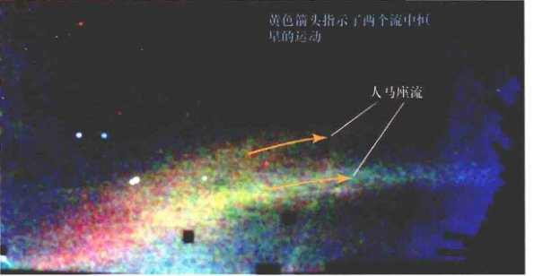
<div class="caption">
<strong>图3.13 银河系的潮汐流</strong><br/>
        (a) 此图描绘了被我们的银河系捕获的一个正在进入的富恒星的星系伴侣的解体和消散。最终，较小的星系消散在较大的一个中，就像是被“消化”了，正如其他矮伴星系在很久以前被银河系吞食那样。(b) 银河系的这个外部区域显示了无数的恒星，它们已被撕离了银河系中已经瓦解的卫星星系（颜色表示距离，蓝色是最近的）。几个潮汐流是显而易见的，中间最大的一个展示了正在步入死亡螺旋的人马座矮星系的两个轨道。[V. 贝洛库罗夫 (V. Belokurov)、斯隆数字化巡天 (SDSS)]
    </div>
<p>现在考虑两个相互作用的盘状星系，其中一个比另一个小一点儿，且每一个的质量都能和银河系相媲美。如图3.14中计算机生成的图像序列所显示的，较小的星系可以大幅度扭曲较大的星系，导致以前不存在的旋臂出现，触发一个延长的恒星形成的阶段。整个事件需要几亿年——这一演化时长用一台超级计算机可以在几分钟内进行模拟。图中的最后一帧看起来与第1章开篇照片所示的双重星系非常相似，而事实上，该模拟正是被构建起来模仿该双重星系系统的尺寸、形状和速度的。壮丽的旋涡星系M51俗称“涡状星系”，距离地球大约10Mpc；其较小的同伴是一个不规则星系，可能在几百万年前飘过了M51。</p>

<div class="caption">
<strong>图3.14 星系的相互作用</strong><br/>
        星系能在它们形成很久之后改变形状。在此计算机生成的序列中，两个星系密切互动了几亿年。较小的星系（红色）的引力扰乱了较大的星系（蓝色），将后者改变成了一个旋涡星系。将这台超级计算机模拟的结果与图2.2(b)比较，后者是涡状星系和其小伴侣的一张照片。[J. 巴恩斯 (J. Barnes) &amp; L. 恩奎斯特 (L. Hernquist)]
    </div>
<p>如果相互碰撞星系的大小和质量差不多，会怎么样？计算机模拟表明，这种并合可以摧毁一个旋涡星系的星系盘，创建一个星系尺度的星爆阶段。并合的暴力及随后的超新星的影响将大量剩余气体弹入星系际空间中，创造了第2.1节中提到的星系团内热气体。(2.1节) 一旦恒星形成的爆发消退，生成的天体看起来就非常像一个椭圆星系。椭圆星系的热X射线晕是原来的旋涡星系的星系盘的最后遗迹。图3.7和图3.8的并合星系可能是正在进行中的这一现象的例子。</p>
<h3>制造哈勃序列</h3>
<p>如果星系通过反复并合而形成和演化，我们可以解释哈勃序列吗？——具体而言，可以解释旋涡星系和椭圆星系之间的差异吗？(2.1节) 详情还远未确定，但值得注意的是，现在的答案似乎是有目前的肯定。碰撞和近距离交会是随机事件，并不代表星系之间“真正的”演化联系。然而，观测和计算机模拟也表明一些可行的途径已经出现。在这些途径中，可能能够呈现所观测到的哈勃类型，令我们的宇宙开始于一个只有不规则的、富含气体的星系碎片。正如我们刚才看到的，模拟表明，主要并合——大小差不多的大型星系之间的碰撞——往往会破坏星系盘，有效地将旋涡星系变成椭圆星系 [见图3.15(a)]。另一方面，次并合——一个小星系与较大的星系相互作用，并最终被后者吸收——往往会留下一个完好的较大星系，或多或少与它在合并前有相同的哈勃类型 [见图3.15(b)]。这是最有可能的大型旋涡星系的成长轨迹——尤其是我们自己的银河系很可能就是如此形成的。</p>
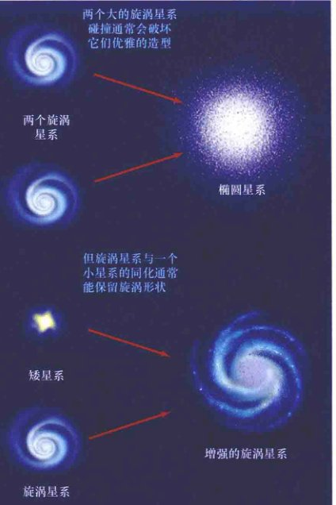
<div class="caption">
<strong>图3.15 星系并合</strong><br/>
        (a) 当同样大小的星系聚集在一起，其结果可能是一个椭圆形的星系，因为它原来的旋臂和星系盘在交会中不容易存活。(b) 与此相反，如果一个大旋涡星系吸收较小的同伴，最后的结果可能仅仅是形成一个较大的旋涡星系，与它原始的几何形状几乎一样。
    </div>
<p>支持这一总体图景的证据来自于如下观测事实：旋涡星系在星系密度较高的区域里（如富星系团的中央区域）比较少见。这些观测与如下观点一致：旋涡星系脆弱的星系盘很容易被碰撞摧毁，而碰撞在星系密集的环境中是比较常见的。旋涡星系也似乎在较大的红移处（也就是在过去）更常见，这意味着它们的数量随时间下降，据推测这也是碰撞的结果。然而，在天文学中，这方面的情况还完全不明确。比如，天文学家知道在宇宙中的低密度区域有众多孤立的椭圆星系，这很难用并合的结果来解释。此外，汇流——其作用是维持星系盘——和碰撞——往往会摧毁星系盘之间的竞争，仍然知之甚少，因为这是星系核活动的效果，我们将在第3.4节讨论。</p>
<p>原则上，与星系并合相关的恒星爆发以及与星系性质相关联的方式，在宇宙的恒星形成历史中留下了它们的痕迹。因此，对遥远星系中恒星形成的研究，已经成为检测和量化整个阶梯式并合理论细节的一个非常重要的途径。</p>
<div class="concept-check">
<h4>概念理解检查</h4>
<p><strong>✓ 除了规模，星系演化与恒星演化之间有什么重要的区别？</strong></p>
</div>
<!-- Feature Box: SDSS -->
<aside class="feature-box">
<h3>探索3-1：斯隆数字化巡天</h3>
<p>本书中使用的许多照片——更不用说流行媒体中的大部分头条图片——来自大型的、知名度高而且通常非常昂贵的仪器，如NASA的哈勃太空望远镜和欧洲南方天文台在智利的甚大望远镜。它们拍摄的深空的壮观景象已经彻底改变了我们对宇宙的看法。然而，一个不太知名的、相当便宜的、没有那么雄心勃勃的项目，从长远来看，也可能对天文学和我们对宇宙的认识有同样伟大的影响。</p>
<p>斯隆数字化巡天 (SDSS)，原本是一个5年的项目，于2000年开始科学运营。该项目旨在系统地绘制出整个天空的四分之一，其规模和精度水平在之前从来没有过。它已编目了近十亿个天体，在5个颜色（波长范围）——从可见光到近红外——记录下它们的视亮度。此外，接下来的光谱观测确定了红移，从而得到了150万个星系和23万个类星体的距离。这些数据已经被用来构造了详细的红移巡天（见4.1节），并探讨了宇宙在非常大尺度上的结构。调查的灵敏度可以在超过十亿秒差距的距离处检测到类似银河系亮度的星系。非常明亮的天体——如类星体和年轻的星爆星系，可在几乎整个可观测宇宙范围内被探测。</p>
<p>第一张图所示为斯隆巡天望远镜，一个用于特殊目的的2.5m望远镜，坐落在阿帕奇·波因特天文台，位于新墨西哥森史波特附近。此反射式望远镜不是空基的，不使用主动或自适应光学，其空间探测深（即远）度不能与更大的仪器相比。那它怎么可能与其他系统竞争呢？答案是，与其他大多数目前正在使用的大型望远镜不同——后者是数百甚至数千个观测者共享仪器，观测者要争夺使用时间，SDSS望远镜则是专门为巡天的目的而设计的。它具有很广的视场，而且专注于自己的任务，在该项目的持续时间内的每一个晴朗的夜晚对天空进行观测。</p>
<p>夜复一夜地使用一台仪器，加上严格的质量，甚至把天气数据也纳入巡天数据（视宁度不佳或遇到其他问题的夜晚将被舍弃，相应的观测会重来），意味着最终产品是一个异常高质量的均匀涵盖了巨大空间体积的数据库——这是一个对宇宙研究的巨大的贡献、一个不可缺少的工具。巡天的视场涵盖了大部分银道面北部的天空，以及围绕南银极的巨大细长条。储存下来的数百万星系的照片和光谱产生了大量的数据。全部巡天产生了大约60万亿字节的数据——堪比美国国会图书馆数据的全部！所有这一切都已经向公众发布。第二张图所示为英仙星系团，这只是构成完整数据库的成千上万的图像中的一个。SDSS最近的亮点是，已经检测到宇宙中已知的最大结构，观测到了已知最遥远的星系和类星体，并一直在限制描述我们宇宙的关键观测参数（见第4章）。</p>
<p>SDSS对天文学的冲击表现在以下方面：宇宙的大尺度结构、星系的起源和演化、暗物质的性质、银河系的结构、星际物质的性质和分布，以及系外行星系统的性质。规格统一、准确、详细的数据库很可能在未来几十年中被几代科学家所使用。它的成功促成了一些更加雄心勃勃的巡天项目跟进，其中的第一个项目于2015年左右开始运作。</p>


<div class="caption">[斯隆数字化巡天 (SDSS)、R. 勒普顿 (R. Lupton)]</div>
</aside>
<h2>3.4 星系中的黑洞</h2>
<p>现在，让我们来讨论类星体和活动星系如何适应刚才所描述的星系演化的框架。类星体在离我们很远的距离比较常见这一事实表明，它们在过去比在今天更为普遍。(2.4节) 据观测，类星体具有高达7.1的红移（为2013年年初的记录），所以这个过程必然在至少130亿年前开始（见表2.2）。然而，大多数类星体有2和3之间的红移，对应大约20亿年之后的一个阶段。大多数天文学家都认为，类星体代表星系演化的早期阶段——“青春期”阶段，倾向于骤燃和“叛逆”，然后才逐渐进入稳定的“成年”阶段。这一观点被如下事实强化：相同的黑洞产能机制可以解释类星体、活动星系和类似我们的银河系这样的正常星系中心区域的光度。</p>
<h3>黑洞质量</h3>
<p>在第2章，我们看到了大多数天文学家接受的活动星系核的标准模型——一个超大质量黑洞吸积气体。(2.5节) 我们也看到，很大一部分“明亮”星系表现出某种类似的行为，尽管在许多情况下，这些行为只代表了星系的总能量输出的一小部分。这表明这些星系中也可能藏有中央黑洞，在适当的环境下具有大得多的潜在活性。我们自己的银河系是一个很好的例子。(1.7节) 位于银河系中心的400万倍太阳质量的黑洞目前是不活跃的，但如果新燃料被供应（例如，一颗恒星或一片分子云太接近黑洞的强引力场时），它就很可能成为一个（相对较弱的）活动星系核。</p>
<p>近年来，天文学家发现，许多明亮的正常星系在其中心包含有超大质量黑洞。图3.16展示了也许是最有说服力的证据，说明一个正常星系中也能有这样一个黑洞，它来自对NGC 4258的射电研究，这是一个旋涡星系，距我们约6Mpc。使用甚长基线射电望远镜阵——一个包括10个射电望远镜的大陆尺度的干涉仪，一支美国-日本团队已经取得了比HST高几百倍的角分辨率。该观测揭示出，一组分子云以有序的方式围绕星系的中心盘旋。多普勒测量表明，一个稍微扭曲的、旋转的盘恰恰以星系的心脏为中心。旋转速度意味着在一个尺度不到0.2pc的区域里，集中了超过4000万倍太阳质量。</p>
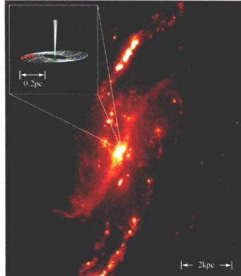
<div class="caption">
<strong>图3.16 星系级黑洞</strong><br/>
        一个射电望远镜网络探测了旋涡星系NGC 4258的核心，在这里呈现出的主要是氢的发射线。在最里面的区域（小图），多普勒频移的分子云的盘（用红、绿、蓝点表示）完美服从开普勒第三定律，显然揭示出在盘的中心有一个巨大的黑洞。[J. 莫兰 (J. Moran)]
    </div>
<p>类似的超大质量黑洞存在于星系核心的证据在距银河系几千万秒差距范围内的几十个明亮的星系中——有的是正常星系，有的是活动星系——都有。一些观测者走得更远，他们认为，在调查一个星系并可能发现一个黑洞的情况下，给定观测的分辨率和灵敏度，一个黑洞其实就已经被发现了。这是通向下面这个卓越结论的一小步：每一个明亮的星系——活动或不活动的——都包含一个中央超大质量黑洞。这个统一的原则从根本上将我们的正常星系理论和活动星系理论连接了起来。</p>
<p>天文学家还发现，中央黑洞的质量和其所在星系的性质之间具有相关性。如图3.17所描绘的，最大的黑洞往往在最大质量的星系中被发现（通过对核球质量的测量）。这一相关性的原因尚不完全清楚，但多数天文学家认为这最起码意味着，正常星系和活动星系的演化必然非常紧密地相连，正如我们现在所讨论的。</p>
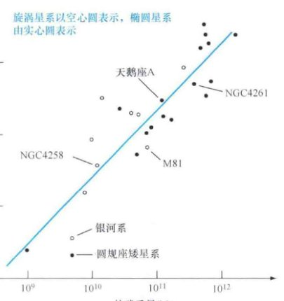
<div class="caption">
<strong>图3.17 黑洞质量</strong><br/>
        对邻近的正常和活动星系的观测表明，中央黑洞的质量与星系核球的质量紧密相关。在此图中，每个点代表一个不同的星系。直线是对许多星系的数据点的最佳拟合，暗示着一个1/200核球质量的黑洞质量。
    </div>
<h3>类星体时代</h3>
<p>星系中的超大质量黑洞从何而来？说实话，在宇宙历史的早期形成第一批十亿太阳质量黑洞的过程是完全未知的。然而，负责类星体能量发射的吸积过程也很自然地负责了黑洞的质量——只有下落质量的百分之几会被转换成能量，剩下的一旦越过事件视界就会被黑洞永远吞噬。简单的估计表明，驱动类星体所需的吸积率一般都与通过其他手段推断出来的黑洞质量相一致。</p>
<p>由于已知最明亮的类星体每年吞噬大约1000倍太阳质量的物质，它们这么大的光度不可能维持很长时间——哪怕是100万年也需要十亿太阳质量，足以解释已知的最庞大的黑洞。(2.4节) 这表明，一个典型的类星体在燃料耗尽前，只在自己高光度阶段维持相对短的时间——也许在某些情况下只有几百万年。因此，大多数的类星体是很久以前发生的相对短暂的事件。</p>
<p>为了造就一个类星体，我们需要一个黑洞以及足够多的燃料来为其“供电”。虽然燃料在宇宙早期是丰富的——以气体和新形成的恒星的形式，但黑洞却并不多见。它们还没有形成，虽然我们对细节同样知道得很少。最终驱动类星体的超大质量黑洞的基本成分很可能是相对较小的黑洞——大约为太阳质量的数百倍或上千倍，由第一代恒星形成。这些小黑洞沉没到它们所在的仍然在形成中的母星系的中心，并合为一个单一的、更大质量的黑洞。</p>
<p>随着星系并合，它们的中央黑洞也会并合，并最终在许多年轻星系的中心形成超大质量（100万倍至10亿倍太阳质量）的黑洞。一些超大质量黑洞可以直接通过密集的原星系碎片中心区域的引力坍缩形成，或者通过在宇宙中一个特别密集区域的吸积或一系列快速并合而形成。这些事件导致了已知最早（红移6~7）的类星体，在130亿年前就已经闪闪发光。然而，在大多数情况下，并合需要较长的时间——大约需要再过20亿年。届时（红移在2~3之间，约为110亿年前），许多超大质量黑洞已经形成了，并且仍有大量活跃的被并合驱动的燃料给它们提供动力。这是宇宙中的“类星体时代”。</p>
<p>直到最近，天文学家们才相信，黑洞会在它们的母星系碰撞时并合，但他们对这个过程没有直接证据——没有“当场抓住”两个黑洞的照片。2002年，钱德拉X射线天文台发现了一个双黑洞——两个超大质量天体，每一个都有几千万太阳质量——位于超亮的星爆星系NGC 6240的中心，该星系本身就是约30万年前一次星系并合的产物。图3.18所示为该星系的光学和X射线图像。黑洞是在（伪彩色）X射线图像中靠近中心的两个蓝-白色天体，它们互相绕转，相距仅1000pc。由于与恒星和气体的相互作用而失去能量，因此被预测会在4亿年之后并合。天文学家现在知道，在相对较近的星系中有几个双黑洞，它们在螺旋着并合的道路上被“当场抓住”。NGC 6240距地球仅120Mpc，所以我们离看到早期宇宙中类星体的并合还很远。不过，天文学家认为，类似的事件一定在数十亿年前发生过无数次——随着星系的碰撞和类星体的闪耀。</p>
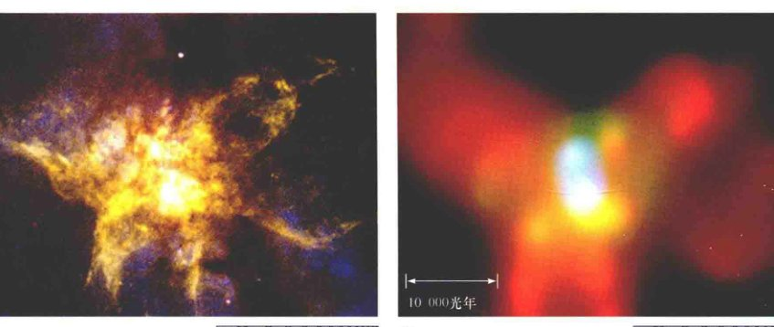
<div class="caption">
<strong>图3.18 双黑洞</strong><br/>
        这些是星爆星系NGC 6240的(a)光学（哈勃）和(b)X射线（钱德拉）图像，显示了两个超大质量黑洞（靠近X射线图像中心的蓝白色天体）以约1kpc的距离互相绕转。理论估算意味着它们将在4亿年之后并合，释放出一个强烈的引力辐射爆发。光学图像的颜色是真实的，X射线图像中的伪彩色表示了能量范围。[美国国家航空航天局 (NASA)]
    </div>
<p>遥远的星系通常比它们明亮的类星体核心暗弱得多。其结果是，直到最近，天文学家们才能勉强从类星体的图像中辨别出星系结构。自20世纪90年代中期以来，几组天文学家都使用哈勃太空望远镜来搜索适度距离的类星体的“宿主”星系。从哈勃望远镜的图像中去除明亮的类星体核心，并仔细分析残留的光后，研究人员报告说，在研究的所有例子中——到目前为止有几十个类星体——可以看到寄主星系包裹着类星体。图3.19所示为迄今为止曝光最长的一此类星体。即使没有先进的计算机处理，宿主星系也都清晰可见。</p>

<div class="caption">
<strong>图3.19 类星体的宿主星系</strong><br/>
        这些遥远类星体的长曝光图像显示了类星体“居住”的年轻宿主星系，支持了如下想法：类星体代表星系演化早期的高光度阶段。左上角的类星体就是最好的例子，它的星表名称是PG0052+251，距离地球大约700Mpc。[美国国家航空航天局 (NASA)]
    </div>
<p>正如我们在第2章看到的，活动星系和星系团之间的联系已经非常确定，并且许多相对较近的类星体也已知是星系团的成员。(2.4节) 但是，最遥远的类星体的联系还不太明确，只是简单地因为它们是如此遥远，星系团中的其他成员都非常暗弱，很难被看见。然而，由于已知的类星体数量不断增加，类星体成团的证据（因此也可推测出类星体作为年轻星系团的成员的证据）也在增加。因此，我们最多可以说，类星体的活动与年轻星系团中的相互作用和碰撞是密切相关的。</p>
<p>这种联系也表明了一种可能的情况——黑洞的生长可能会受制于它们母星系的生长。许多天文学家认为有一种叫作<strong>类星体反馈</strong>的过程，类星体的巨大能量输出中的某些部分被周围星系的气体吸收，这或许可以解释图3.17所示的黑洞和核球质量的关系。在这张很有吸引力但意义尚不确定的图片中，被吸收的能量从星系中排出气体，并同时关闭了两个星系的恒星形成和类星体本身的燃料供应，从而连接了中央黑洞的生长和核球中新恒星的形成。</p>
<h3>活动星系和正常星系</h3>
<p>在早期，频繁的并合可能补充了类星体的燃料供应，延长了它的发光寿命。然而，由于并合率下降，这些星系处在“类星体”阶段的时间越来越短。大约100亿年前，明亮类星体的数量迅速下降，标志着类星体时代的结束。今天，类星体的数量几乎下降到零（回忆一下，即使最近的类星体也距我们数百Mpc之遥）。(2.4节)</p>
<p>大黑洞不会简单地消失。如果一个星系在100亿年前包含一个明亮的类星体，那么在该星系年轻时代驱动其所有活动的黑洞今天必然仍然存在于星系中心。我们看到了作为活动星系的这些黑洞中的一部分，其余的则“蛰伏”在我们身边的正常星系中。这种观点认为，<strong>活动星系和正常星系之间的差别主要是燃料供应的问题。</strong>当燃料耗尽后，类星体熄灭，其中央黑洞仍然能在之后维持一段时间，其能量输出便会降低到一个相对“细微”的程度。这个位于正常星系核心的黑洞处于简单的休眠状态，等待着下一次的相互作用引发新的活动和爆发。偶尔，两个邻近的星系可能会互相影响，导致新燃料的洪流流向一个或两个星系的中心黑洞。发动机暂时启动，引起了我们观测到的邻近的活动星系——射电星系、赛弗特星系，以及其他。</p>
<p>如果这总体图像是正确的，这意味着许多相对邻近的星系（但可能不包括我们自己的银河系，其中心黑洞即使在现在也只有区区300万～400万太阳质量）必然曾经有过灿烂的类星体。(1.7节) 如果有外星天文学家，在数十Mpc以远，在一个特定的时刻观测室女星系团中M87更古老的样子——数十亿年前的样子，他们会谈论其巨大的光度，没有恒星特征的光谱，并有可能谈论它的高速喷流，而且也会想知道，究竟是什么样的奇特物理过程才可能导致其暴力的活动！(2.4节)</p>

<div class="caption">
<strong>解说图3.20 星系演化</strong><br/>
        大多数星系演化序列是从导致高亮度类星体的星系并合开始的。它们的暴力活动之后通过射电星系和赛弗特星系而减少，最终形成正常的椭圆星系和旋涡星系。驱动了早期活动的中心黑洞仍然在后面的时间存在，但其中的许多已经耗尽了燃料。
    </div>
<p>最后，图3.20所示为类星体、活动星系和正常星系演化之间一些可能（但未经证实！）的联系。如果最大的黑洞位于最大质量的星系，同时也倾向于驱动最亮的活动星系核的话，那么我们可以预期，最明亮的核应位于最大的星系中，这些星系可能是其他人所加系的主并合形成的。由于这种并合的产物是椭圆星系，所以我们便为什么最亮的活动星系——射电星系会与大型椭圆星系相关这个问题给出了一个合理的解释。(2.4节) 此外，形成旋涡星系的路线必然源自一系列较小的星系的并合，造成了在这一路径上有较少暴力活动的赛弗特星系。</p>
<section class="concept-check">
<h4>概念理解检查</h4>
<p><strong>✓ 是否每个星系都有活动的潜力？</strong></p>
</section>
<h2>3.5 大尺度上的宇宙</h2>
<p>许多星系，包括我们自己的银河系，都是星系团——被自身引力结合在一起的百万秒差距尺度的结构——的成员。(2.2节) 我们自己的小星系群被称为本星系群。图3.21所示为室女星系团——最接近我们的大型星系团——和其他几个堪称我们宇宙邻居的已知星系团的位置，所显示出来的区域的尺度约为70Mpc。图中的每个点代表一个完整的星系，其距离已经通过在第2章中描述的方法之一确定了。</p>
<h3>星系团的集团</h3>
<p>星系团是顶级的宇宙层次了吗？宇宙中还有没有更大的物质组织？大多数天文学家认为，星系团本身又会聚集成团，形成超级庞大的物质团块，被称为<strong>超星系团</strong>。</p>

<div class="caption">
<strong>图3.21 室女座超星系团的3D图</strong><br/>
        本图绘制了室女座超星系团（左中）的拉长结构相对于其他邻近超星系团的位置关系，这些超星系团位于银河系（银河系在这个庞大地图中心附近被标记为“本星系群”的小圆点内）周围大约十亿光年的范围内。单个的星系未显示在图上。相反，平滑的等高线图勾勒出星系团，每个星系团通过其最突出的成员命名或编号。
    </div>
<p>总之，银河系附近的星系和星系团构成本超星系团，又称室女座超星系团。除了室女星系团外，它还包含本星系群和室女星系团周边20~30Mpc范围内的许多其他星系团。图3.21显示了一幅拓展了的我们宇宙邻居的由计算机生成的三维图像，描绘了室女座超星系团（中心附近）与其他“邻近”超星系团在一个巨大的假想立方体中的位置关系——这个立方体的短边大约为100Mpc。</p>
<p>总而言之，本超星系团的尺度大约是40~50Mpc，包含了大约 $10^{15}$ 倍太阳质量的物质（数万个星系），其形状非常不规则。本超星系团在垂直于银河系和室女星系团连线的方向上被显著拉长，它的中心落在室女星系团附近。现在，这一事实应该毫不奇怪了——本星系群并不在本超星系团的中心。事实上，我们生活在相当遥远的外围，距中心约18Mpc。</p>
<h3>红移巡天</h3>
<p>我们窥视深空越远，就会看到更多的星系、星系团和超星系团。是否有甚至比超星系团更大尺度的结构？为了回答这些问题，天文学家使用哈勃定律绘制出了星系在宇宙中的分布。</p>
<p>图3.22所示为20世纪80年代由哈佛大学的天文学家所进行的早期宇宙巡天的一部分。利用哈勃定律作为距离指标，团队在一个距银河系大约200Mpc的区域中，以一系列楔形“片”的形式系统地测绘出了星系的位置，每个片厚6°，从北部天空中开始。第一片（如图所示）覆盖包含后发星系团（见图2.1）——在天空中恰好位于几乎垂直于银河系平面的方向上——的天空区域。因为红移被用作主要的距离指示器，所以这些研究被称为红移巡天。</p>
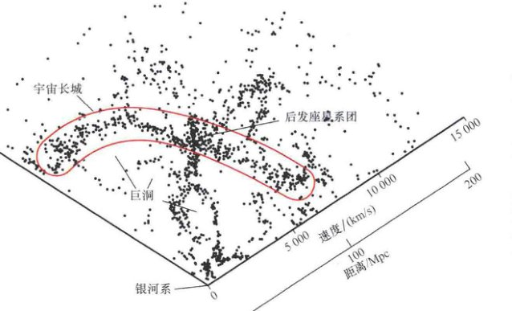
<div class="caption">
<strong>图3.22 星系巡天</strong><br/>
        这是一块宇宙的“切片”，涵盖了距我们最远约200Mpc的1732个星系，显示了星系和星系团在大尺度上不是随机分布的。相反，它们似乎有一个纤维状结构，围绕着广袤、几乎空无一物的巨洞。[哈佛-史密松天体物理中心 (Harvard-Smithsonian Center for Astrophysics)]
    </div>
<p>类似图3.22这样的图最显著的特点是，星系的大尺度分布很明显不是随机的。星系似乎被布置成一串，或者纤维状。它们包围着巨大的、星系相对缺乏的、被称为“巨洞”的区域。巨洞占我们附近宇宙总体积的约50%，但质量只有5%~10%。最大的巨洞的尺度大约为100Mpc。对图中所示的巨洞和纤维结构的最可能的解释是，星系和星系团沿着空间中广阔的“泡”的表面延展。巨洞是这些巨大泡泡的内部。因为我们以宇宙切片的方式穿过了泡泡，所以星系看起来像一串珠子一样分布。像肥皂水中的泡沫，这些巨大的泡泡填充着整个宇宙。最密集的星团和超星系团位于几个泡泡相会的区域。室女座超星系团（见图3.21）拉长的形状是同样的丝状结构的一个本地例子。</p>
<p>大多数理论家认为，这种星系——以及实际上所有的尺度大于数百万秒差距的结构——的“泡沫式”分布，其起源可以直接追溯到宇宙最初阶段的环境（第5章）。因此，大尺度结构的研究对我们了解宇宙本身的起源和性质至关重要。</p>
<p>有观点认为，纤维是巡天切片与一个大得多的结构（泡泡的表面）的横截面。这一观点已经在接下来的三个切片——位于第一个的上面和下面——完成时被证实了。图3.22中的红色轮廓线指示的区域被发现继续通过上下两块切片。这个由星系构成的扩展的片状结构被称为“宇宙长城”，其大小至少为70Mpc（垂直于本页的平面）乘以200Mpc（在本页平面内）。它是宇宙中已知的最大结构之一。</p>
<p>图3.23所示为一个更新的红移巡天，明显比图3.22给出的大。这项巡天包括了在距银河系大约750Mpc范围内的近24000个星系。可以看到许多巨洞和“巨壁状”纤维（有些被标了出来），但除了在较大距离上星系数量的总体减少外——基本上是因为根据平方反比定律，更遥远的星系更难被看到——没有明显的证据表明有任何结构的尺度大于约200Mpc。仔细的统计分析证实了这一感觉。显然，巨洞和巨壁代表了宇宙中最大的结构。我们将第4章再讨论这一事实的深远影响。</p>

<div class="caption">
<strong>图3.23 更大尺度上的宇宙</strong><br/>
        这个大尺度的星系巡天，由位于智利的拉斯坎帕纳斯天文台进行。这张图由约1000Mpc范围内的23697个星系组成，在两个方向上都是80°（宽）x 4.5°（厚）的楔形。许多尺度高达100~200Mpc的巨洞和巨壁很明显，但没有更大的结构了。作为比较，图3.22所示的巡天范围在北部天空中被标记为蓝色的弧形。
    </div>
<h3>类星体吸收线</h3>
<p>我们如何能在非常大的尺度上探索宇宙的结构？正如我们所看到的，很多物质是黑暗的，即便是“发光”的成分，也因为其太暗弱而很难在远距离上被探测到。研究大尺度结构的一种方法是利用类星体很远的距离、点状的外观和极大的光度。由于类星体是那么遥远，从类星体前往地球的光因而有非常好的机会在途中通过或接近“有趣的东西”。通过分析类星体的图像和光谱，就可以拼凑出其光线穿过的这部分空间的一部分样子。</p>
<p>类星体方法让人想起了用明亮的恒星探测太阳附近的星际介质，不过它们也有相同的基本缺点：我们只能研究类星体所在的那个方向的天空。但是，这个问题会随着正在进行和计划进行的能发现越来越暗天体的大尺度巡天而被逐渐解决。这些巡天中最重要的是斯隆数字化巡天（探索3-1），该巡天已构建了许多北方天空的地图，其中包括数百万个星系和10多万个类星体。</p>
<p>除了展示自己光谱中强烈的红移外，许多类星体还显示出额外的吸收特征，这些吸收的红移程度比类星体本身的红移要小得多。例如，类星体PHL938的一条发射线的红移为1.954，由此得出该类星体距离我们约5200Mpc。但它又只有仅仅0.613红移的吸收线。这些较小红移的吸收线被解释为，源于比类星体本身距我们近得多（仅约2300Mpc）的中间气体。最大的可能是，这种气体是另外的不可见星系的一部分，刚好位于我们和类星体的视线之间。于是，类星体的光谱给天文学家提供了探测未知宇宙部分的一种方法。</p>
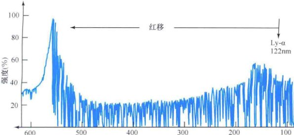
<div class="caption">
<strong>互动图3.24 吸收线“线丛”</strong><br/>
        类星体QSO 1422 + 2309光谱中数量庞大的吸收线，是来自几百个前景氢云的紫外“莱曼-阿尔法”线，每一个的红移量都稍有不同（但比类星体本身的红移量小）。左侧的峰标记了来自类星体的莱曼-阿尔法发射线，本来在122nm，但在这里红移到了564nm，已经处于可见光波段。
    </div>
<p>氢原子的吸收线是科学家特别感兴趣的，因为氢组成了宇宙中的大部分物质。具体来说，氢的与基态和第一激发态之间的跃迁有关的紫外(122nm) “莱曼-阿尔法”线，通常被用于这方面的研究。如图3.24所示，当天文学家观测一个高红移类星体的光谱时，他们通常会看到吸收线“线丛”开始于类星体本身的“莱曼-阿尔法”发射线（红移了）的波长，并且延伸到较短的波长。这些线被解释为前景结构——星系、星系团等——中的气体云所产生的“莱曼-阿尔法”吸收特征。这给了天文学家了解沿着视线物质分布的关键信息。</p>
<p>因此，类星体的光探索了另一种不可见的宇宙气体成分。原则上，每一个氢原子中间云都可以让我们以探测宇宙中物质分布的方式，在类星体的光谱中留下了自己的特色印记。通过将这些莱曼-阿尔法线丛与模拟结果相比较，天文学家希望能完善星系形成和大尺度结构演化理论的许多关键要素。</p>
<h3>类星体“幻影”</h3>
<p>1979年，天文学家惊讶地发现似乎有一个双类星体——两个类星体具有完全相同的红移和类似的光谱，在天空相隔只有几角秒。这样一个双类星体的发现本来就够惊人了，但它们的真相竟然更加惊人的：对这两个类星体的射电发射的仔细研究发现，它们并非是两个不同的天体。相反，它们是同一个类星体的两个单独的像！这样的双类星体的光学图像展示在图3.25中。</p>

<div class="caption">
<strong>图3.25 双类星体</strong><br/>
        这个“双重”类星体（编号为AC114，距我们约20亿pc）并不是两个独立的天体。相反，两个大的“斑点”（左上和右下）是同一个天体的两个像，通过引力透镜创建。透镜星系本身在图中可能是不可见的——这个图像中靠近画面中央的两个天体被认为是前景星系团中的不相关的星系。[美国国家航空航天局 (NASA)]
    </div>
<p>是什么能让类星体的图像这样“翻倍”呢？答案是<strong>引力透镜</strong>——背景天体的光被某些前景天体的引力所偏折和汇聚（见图3.26）。在第1章中，我们看到了银河系银晕中致密天体的透镜效应如何放大一个遥远恒星的星光，允许天文学家探测不可见的恒星级的暗物质。(1.6节) 在类星体的情况下，这个想法是一样的，只是前景透镜天体是整个星系或星系团，因此光的偏转是如此之大（几角秒）以至于可以形成一些单独的类星体的像，如图3.27所示。目前已知大约有二十多个这种引力透镜。随着望远镜以越来越高的灵敏度探索宇宙，天文学家们开始认识到，引力透镜是宇宙中比较常见的特征。</p>
<p>事实上，引力透镜的很多理论在第一个透镜类星体的观测之后才被制定，随后再应用于银河系的暗物质搜索。</p>
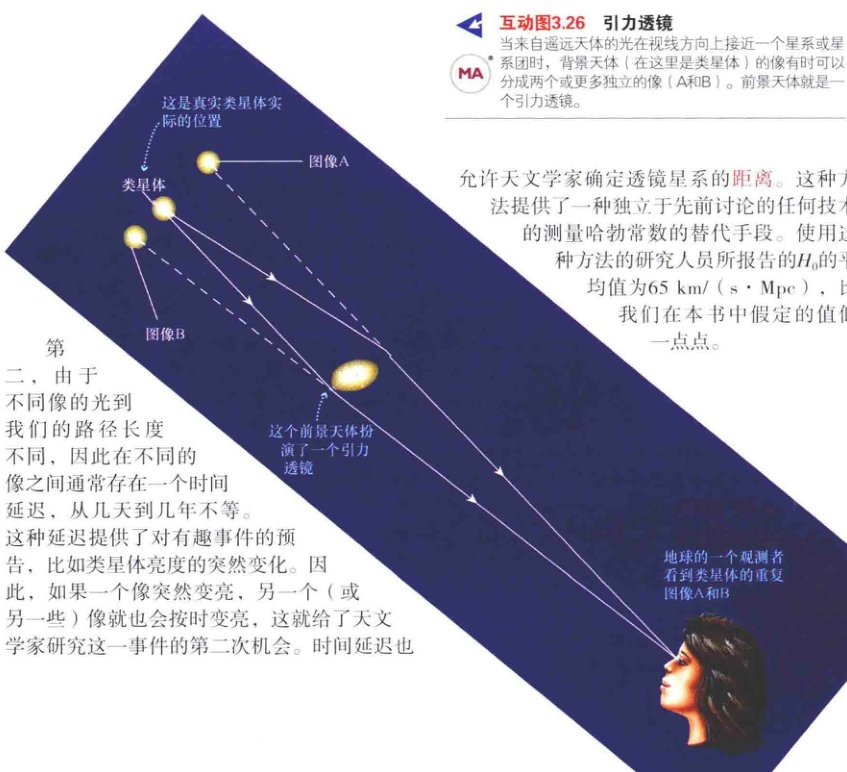
<div class="caption">
<strong>互动图3.26 引力透镜</strong><br/>
        当来自遥远天体的光在视线方向上接近一个星系或星系团时，背景天体（在这里是类星体）的像有时可以分成两个或更多独立的像 (A和B)。前景天体就是一个引力透镜。
    </div>
<p>允许天文学家确定透镜星系的距离。这种方法提供了一种独立于先前讨论的任何技术的测量哈勃常数的替代手段。使用这种方法的研究人员所报告的H₀的平均值为 65 km/(s · Mpc)，比我们在本书中假定的值低一点点。</p>
<p>二、由于不同像的光到我们的路径长度不同，因此在不同的像之间通常存在一个时间延迟，从几天到几年不等。这种延迟提供了对有趣事件的预告，比如类星体亮度的突然变化。因此，如果一个像突然变亮，另一个（或另一些）像就也会按时变亮，这就给了天文学家研究这一事件的第二次机会。时间延迟也允许天文学家确定透镜星系的距离。</p>
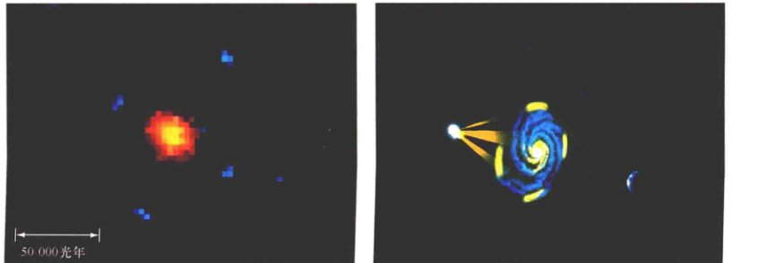
<div class="caption">
<strong>图3.27 爱因斯坦十字</strong><br/>
        (a) “爱因斯坦十字”，一个类星体相互分开只有几角秒的多重像。本图显示了位于中央的星系产生的同一个类星体的四重像。(b) 一个简化的艺术图，展示了如果地球在右边，遥远的类星体在左边，这时会发生什么。[美国国家航空航天局 (NASA)、D. 贝里 (D. Berry)]
    </div>
<p>最后，通过研究背景类星体和星系与前景星系团的引力透镜，天文学家可以更好地了解暗物质在这些星系团中的分布，而这是宇宙大尺度结构中的一个很重要的问题。</p>
<h3>绘制暗物质地图</h3>
<p>天文学家已经将首先从类星体研究中学会的方法扩展到了所有遥远天体的引力透镜上，以便更好地探测宇宙。遥远暗淡的不规则星系——如果目前的理论是正确的，它们就是宇宙的原料（见3.3节）——在这里特别令人感兴趣，因为它们比类星体更常见，它们能更好地覆盖天空。通过研究由前景星系团造成的背景类星体和星系的引力透镜，天文学家可以更好地了解暗物质在大尺度上的分布。</p>

<div class="caption">
<strong>图3.28 星系团引力透镜</strong><br/>
        (a) 这幅壮观的引力透镜的例子显示了来自非常遥远星系的一百多条暗淡的弧线。穿过前景星系团(A2218，距我们大约十亿秒差距)的纤细线条类似于蜘蛛网，但它确实是A2218的引力场——偏折了背景星系的光，扭曲了其外观——造成的幻象。通过对扭曲程度的测量，天文学家可以估计居间星系团的质量。(b) 另一星系团，编号是0024+1654，距我们约15亿pc，显示出来的红黄色斑点大多数是正常的椭圆星系，蓝色环状结构是一个单个背景星系的像。[美国国家航空航天局 (NASA)]
    </div>
<p>图3.28(a)和图3.28(b)显示了暗淡的背景星系的像是如何被前景星系团的引力弯曲成弧形的。弯曲程度允许我们测量前景星系团的总质量（包括暗物质的质量）。在图3.28(b)中可见的（多为蓝色的）环形和弧形特征是一个单个的遥远（看不见的）旋涡或环状星系，由前景星系团（图中的黄色斑点）的引力透镜效应造成的多重像。</p>
<p>我们甚至可以通过仔细分析背景天体的扭曲而重构出前景天体的暗物质分布，从而提供一个方法，可以获得在尺度上远大于之前方法的物质分布情况。图3.29是一个重构的地图，显示了距一个小星系团（靠近地图中心的最亮的斑点）中心数百万秒差距处有暗物质存在。注意暗物质分布的拉长结构，让人联想到室女座超星系团和在大尺度星系巡天中所看到的纤维状结构。</p>
<p>2006年，天文学家利用这些技术获得了可能是暗物质的第一次直接观测证据。图3.30显示了一个叫作1E0657-56的遥远星系团的光学和X射线合成图像。模糊的红色区域显示了星系团中热的X射线发射气体的位置，这是发光物质的主体。蓝色区域表示了大多数物质实际所在的地方，通过研究该星系团对背景星系的透镜效应而确定。需要注意的是，大部分物质并不以热气体的形式存在，这意味着在星系团中，暗物质的分布不同于“正常”物质。</p>
<p>对于这个奇怪形状的解释是，我们正在目睹两个星系团之间的碰撞。每个星系团最初的热气体和暗物质都分布在整个系统内，但当两个系统相撞时，每个系统中的气体云的压力便会倾向于让对方停下来，令气体云落后于星系和暗物质前进位置的中心。气体和暗物质之间的分离直接违背了一些被认为已经可以解释星系和星系团的“暗物质问题”的非正统引力理论，这可能会被证明是我们对宇宙大尺度结构认识的关键部分。</p>
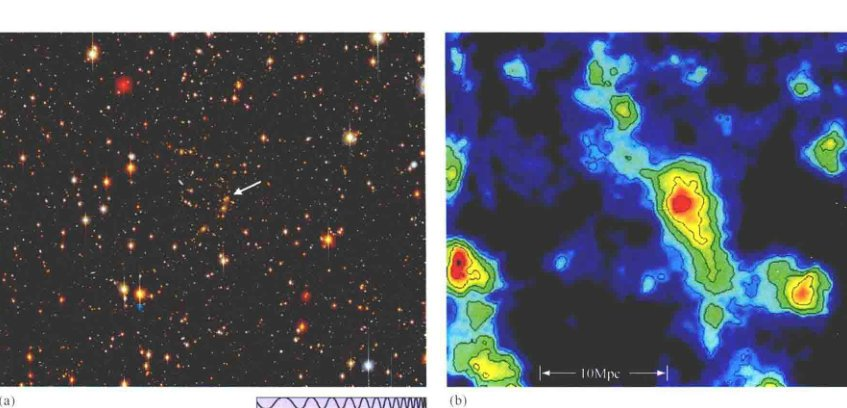
<div class="caption">
<strong>图3.29 暗物质地图</strong><br/>
        图中背景天体测量到的扭曲能显示出宇宙中的暗物质地图。对这一包含小星系团的天区的光学图像(a)的分析揭示了暗物质的分布(b)，以与(a)图同样的比例显示在可见的星系团（箭头指向的(a)图中靠近中心的黄色星系团块）。[J. A. 泰森 (J. A. Tyson)、阿尔卡特-朗讯 (Alcatel-Lucent)、美国国家光学天文台 (NOAO)]
    </div>
<section class="concept-check">
<h4>概念理解检查</h4>
<p><strong>✓ 对遥远类星体的观测，如何告诉我们距我们较近的宇宙的结构？</strong></p>
</section>
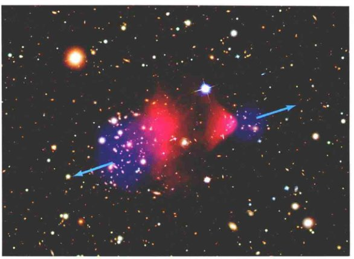
<div class="caption">
<strong>互动图3.30 星系团碰撞</strong><br/>
        星系团必然也会偶尔发生碰撞，正如这里展示的情形。这个合成的星系团在星表中的编号是没有特色的1E0657-56，名字叫作“子弹星系团”。这是一个距我们约10亿pc的一片区域的合成图像，显示了以白色表示的来自星系本身的可见光，和以红色表示的来自星系团内热气体发射的X射线。蓝色代表推测的两个巨大星系团内的暗物质，它们的位置已明显偏离了两个星系团的正常物质。[美国国家光学天文台 (NOAO)、美国国家航空航天局 (NASA)]
    </div>
<!-- Page 26 -->
<aside class="sidebar" style="background: #2c3e50; color: white;">
<h3 style="color: #f1c40f;">终极问题</h3>
<p style="color: white;">令每个人都烦恼的暗物质是什么？这种只产生引力效应，却不可能通过电磁手段来探测的物质真实存在吗？或者，难道这意味着我们对引力在非常大尺度上起作用的方式的理论存在严重错误？暗物质——现在还有暗能量（见第4章）——代表了当今天文学最重要的科学难题，谁能解决它们就将立即成为名人。很多科学家都在很努力地尝试，但还没有人成功。</p>
</aside>
<section class="chapter-review">
<h2>章节回顾</h2>
<h3>小结</h3>
<ol>
<li>
<strong>邻近的旋涡星系的质量</strong> 可以通过研究它们的自转曲线来确定。天文学家还通过对双星系和星系团的研究来获得相关星系质量的统计估计。
            </li>
<li>
                测量星系和星系团的质量揭示出大量暗物质的存在。暗物质的比例随着考察尺度的增大而增加。宇宙中90%以上的质量是黑暗的。已经在许多星系团内的星系中发现了大量的热X射线发射气体，但不足以解释从动力学研究推断的暗物质。
            </li>
<li>
                研究人员知道，没有简单的演化序列连接旋涡星系、椭圆星系和不规则星系。大多数天文学家认为，大型星系形成于较小的星系的并合。星系之间的碰撞和并合，以及星系际气体的吸积都对星系演化起着非常重要的作用。当一个星系与邻居近距离交会或者相撞时，会导致一个<strong>星爆星系</strong>(p.71)。交会引起的强潮汐扭曲会压缩星系气体，造成普遍的恒星形成。旋涡星系之间的并合最有可能形成椭圆星系。
            </li>
<li>
                类星体、活动星系和正常星系可能是一个演化序列。当星系开始形成和并合时，其条件可能适合在其中心形成大黑洞，结果可能会产生高光度的类星体。最亮的类星体消耗如此多的燃料，以至于其能量发射寿命一定很短。由于燃料供应减少，类星体变暗，它所在的星系成为间歇可见的活动星系。在更晚的时候，星系核变成实质上不活动的，这样就留下了一个正常星系。许多正常星系都被发现含有大质量的中央黑洞，这表明大多数星系具有活动能力——如果它们与邻居相互作用的话。<strong>类星体反馈</strong>(p.82)可以部分解释为什么黑洞质量与它们母星系的质量相关。
            </li>
<li>
                星系团本身倾向于聚集在一起形成<strong>超星系团</strong>(p.84)。室女星系团、本星系群和其他几个邻近的星系团形成本超星系团。在更大的尺度上，星系和星系团被排列在巨大的“泡泡”表面，这些泡泡表现为大量物质围绕着被称为“<strong>巨洞</strong>”(p.85)的低密度区域。这种结构的起源被认为与宇宙极早期时代的环境密切相关。
            </li>
<li>
                类星体光谱可以被用作沿观测者视线探索宇宙的探针。有些类星体已被观测到双重或多重影像，这是由<strong>引力透镜</strong>造成的——前景星系或星系团弯曲和汇聚了更遥远类星体的光。分析遥远的星系被前景星系团扭曲了的图像，可以提供确定星系团——包括其中的暗物质——质量的方法，远远超出了星系本身的光学图像所能提供的信息。
            </li>
</ol>
</section>
<!-- Page 27 & 28 -->
<section class="exercises">
<h2>复习与讨论</h2>
<ol class="question-list">
<li><strong>LO1</strong> 描述两种用于测量星系质量的技术。</li>
<li><strong>LO2</strong> 为什么天文学家认为星系团中含有比我们能看到的多得多的质量？</li>
<li><strong>POS</strong> 我们有什么证据表明星系在相互碰撞？</li>
<li>描述对星系的形成和演化而言，碰撞起什么样的作用。并合如何将星系从一种类型变换为另一种类型？</li>
<li><strong>LO3</strong> 你是否认为星系之间碰撞导致的演化在意义上等同于恒星的演化？</li>
<li>我们是否有证据表明，我们自己的银河系与其他星系在过去曾经碰撞过？</li>
<li>什么是星爆星系？它们在星系演化中扮演什么角色？</li>
<li>为什么天文学家认为类星体代表星系演化的早期且相对短暂的阶段？</li>
<li>类星体中心能源发生了什么？</li>
<li><strong>LO4 POS</strong> 为什么星系演化理论认为，在许多正常星系的中心应该有超大质量黑洞？</li>
<li>对星系核中有超大质量黑洞这个问题，天文学家有什么证据？</li>
<li>什么是红移巡天？什么是巨洞？</li>
<li><strong>LO5</strong> 描述在非常大尺度（超过100 Mpc）上的星系物质分布。</li>
<li><strong>LO6 POS</strong> 对遥远类星体的观测如何能被用来探测它们与地球之间的空间？</li>
<li><strong>POS</strong> 天文学家们如何“看到”暗物质？</li>
</ol>
<h2>概念自测：选择题</h2>
<ol class="question-list">
<li>更大质量的星系是： (a) 更遥远的； (b) 其中的恒星形成更快； (c) 包含老年恒星的比例更大； (d) 旋转更快。</li>
<li>一个含有大量暗物质的星系将会： (a) 显得更暗； (b) 转得更快； (c) 排斥其他星系； (d) 有更多的紧紧缠绕的旋臂。</li>
<li>根据X射线观测，星系团内、星系之间的空间是： (a) 完全没有物质； (b) 很冷； (c) 非常热； (d) 充满了暗星。</li>
<li>相对于发光的恒星物质，星系团中暗物质的比例： (a) 比在星系中的比例更大； (b) 比在星系中的比例更小； (c) 与星系中的比例相同； (d) 未知。</li>
<li><strong>VIS</strong> 哈勃深场（见图3.10）显示了一小块天空，其角大小与下列哪项相同？ (a) 一根绳子的厚度； (b) 一毛钱硬币； (c) 紧握的拳头； (d) 伸直的手臂举起的篮球。</li>
<li>星系通过下列哪项演化？ (a) 破碎成更小的星系； (b) 并合成更大的星系； (c) 将它们的气体和尘埃抛入星系际空间； (d) 用光了所有气体，最终成为椭圆星系。</li>
<li>根据星系演化的现有理论，类星体发生在： (a) 演化序列的早期； (b) 靠近银河系； (c) 当椭圆星系并合时； (d) 演化序列的后期。</li>
<li>许多邻近的星系： (a) 会变成黑洞； (b) 包含类星体； (c) 有射电瓣； (d) 有更活跃的过去。</li>
<li><strong>VIS</strong> 如果来自遥远类星体的光没有经过任何居间氢原子云，那么图3.24（“吸收线”）就必须重新绘制，以显示： (a) 更多的吸收特征； (b) 极少的吸收特征； (c) 一个单一巨大的吸收特征； (d) 短波的特征更多，长波的特征更少。</li>
<li><strong>VIS</strong> 如果图3.26（“引力透镜”）展示了一个更大质量的透镜星系，类星体的影像会： (a) 相距更远； (b) 离得更近； (c) 更暗； (d) 更红。</li>
</ol>
<h2>问答</h2>
<ol class="question-list">
<li>仙女星系正以 120km/s 的视向速度接近我们的银河系。考虑该星系目前距我们 800kpc，忽略速度的横向分量和引力对运动的加速效果，估计两个星系将在什么时候碰撞。</li>
<li>根据图3.1中的数据，估计星系 NGC 4984 从中心向外 20kpc 范围内的质量。</li>
<li>使用开普勒第三定律(1.6节)，估算要保持一个星系以 750km/s 的速度在半径为 2Mpc 的圆轨道上围绕一个星系团的中心运动需要的质量。鉴于这类计算需要大量的近似值，你认为它真的是估计星系团质量的一个很好的方法吗？</li>
<li>计算在温度为 2000万K 的气体中的氢原子核（质子）的平均速度。将你的答案与一个以半径为 1Mpc 的圆轨道绕一个质量为 $10^{14}$ 太阳质量的星系团运动的星系的速度进行比较。</li>
<li>一个小的卫星星系，以圆轨道围绕一个大得多的母星系运动，运动方向恰好完全平行于我们从地球上看过去的视线方向。测得的卫星星系和母星系的退行速度分别为 6450km/s 和 6500km/s，两个星系在天空中分开的角度为 0.1°。假设 $H_0 = 70 \text{ km/s} \cdot \text{Mpc}$，计算母星系的质量。</li>
<li>在一次星系碰撞中，两个大小相似的星系以 1500km/s 的相对速度穿过对方。如果每个星系的直径是 100kpc，那么碰撞事件将持续多久？</li>
<li>假设有一种效应的产能效率（即释放出的能量与能转化的总的质-能之比）为 10%，计算一个 $10^{41}$ W 的类星体。如果它持续闪耀100亿年，会消耗多少质量？</li>
<li>一个红移0.20的类星体的光谱包含两组吸收线，红移分别为由0.15和0.155。如果 $H_0 = 70 \text{ km/s} \cdot \text{Mpc}$，估计造成这两组线的居间星系之间的距离。</li>
</ol>
<h2>实践活动</h2>
<p><strong>协作项目</strong><br/>
        图3.10被称为“哈勃深场”。它包含了太多的星系，一个人很难数清楚。因此，分成小组，每个小组数出图中 2cm x 2cm 随机区域中的星系数量，多数几个区域，然后确定你们组的平均星系数量。由于整个图像的面积是大约 500 cm²，因此将你在 2cm x 2cm 区域中得到的星系数量乘以125，就可以估算出图中星系的总数。请将你的值与另一组进行比较。</p>
<p><strong>个人项目</strong><br/>
        寻找由 Halton Arp 制作的《特殊星系图集》的副本。该图集以纸质书的形式出版，但如果找到一个电子版本的话会更方便。请搜寻各种类型的相互作用星系的例子：①潮汐相互作用；②星爆星系；③两个旋涡星系碰撞；④一个旋涡星系和椭圆星系碰撞。对于①，寻找被邻近星系拉出的星系材料，后者也被潮汐扭曲了吗？在②中，星爆活动的最可靠的标志是恒星形成的亮节。你会在什么类型的星系里找到星爆活动？对于③和④，不同的碰撞结果与所涉及的星系类型有什么关系？一个旋涡星系在近距离交会或碰撞后，在最典型的情况下会发生什么？椭圆星系会遭受同样的命运吗？</p>
</section>
</article>